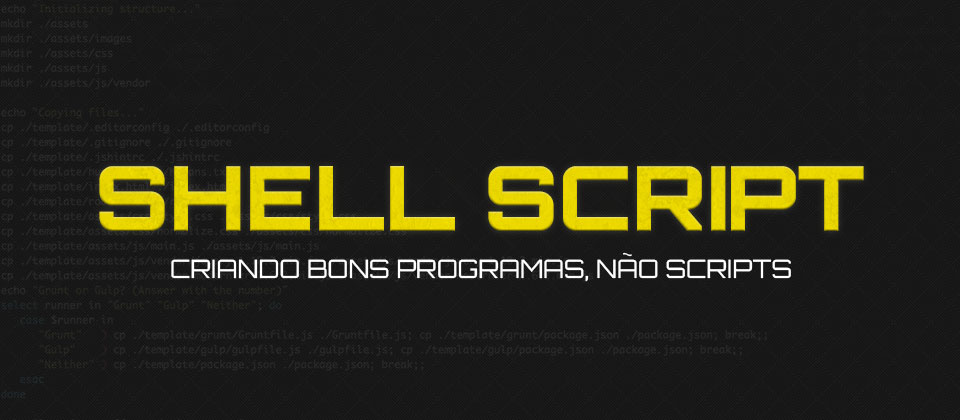

Shellスクリプトとは？
シェルスクリプト（英語：Shell script）とは、コンピュータプログラムとテキストファイルの一種であり、その内容は一連のシェルコマンドで構成され、Unixシェルによってその内容を解釈・実行されることで動作する。スクリプト言語として設計されており、その動作方式はインタプリタ言語と同等である。Unixシェルがコマンドラインインタプリタの役割を担い、シェルスクリプトを読み込んだ後、その中のシェルコマンドを順に実行し、結果を出力する。シェルスクリプトを利用することで、システム管理やファイル操作などを行うことができる。

UnixおよびすべてのUnix系システム、例えばLinux、FreeBSDなどのオペレーティングシステムには、Shell Scriptが存在する。Unix shellのさまざまな種類に応じて、Shell scriptにもさまざまな方言がある。DOS、OS/2、Microsoft Windowsにおけるバッチファイルは、shell scriptと類似した機能を持つ。実際の例を見てみましょう
#!/bin/sh
cd ~
mkdir shell_tut
cd shell_tut
for ((i=0; i<10; i++)); do
touch test_$i.txt
done
实例解析：
- 第1行：スクリプトインタープリタを指定する。ここでは/bin/shをインタープリタとして使用する。
- 第2行：現在のユーザーのホームディレクトリに切り替える
- 3行目：ディレクトリshell_tutを作成する
- 4行目：shell_tutディレクトリに切り替える
- 第5行：ループ条件で、全部で10回ループする。
- 6行目：test_1…10.txtファイルを作成する
- 7行目：ループ本体の終了
cd、mkdir、touchはすべてシステム標準のプログラムで、通常は/binまたは/usr/binディレクトリにあります。for、do、doneはshスクリプト言語のキーワードです。
环境
shellプログラミングはjava、phpプログラミングと同じで、コードを書けるテキストエディタと、解釈して実行できるスクリプトインタープリタがあればよい。
現在の主流OSはすべてshellプログラミングをサポートしている。本ドキュメントで述べるshellプログラミングはLinuxにおけるshellを指しており、基本的にPOSIX標準の機能について説明する。そのため、UnixやBSD（Mac OSなど）にも適用できる。
Linux
Linuxはデフォルトインストールでshellインタープリタが付属している。
Mac OS
Mac OSにはsh、bashという最も基本的な2つのインタープリタだけでなく、ksh、csh、zshなどのあまり使われないインタープリタも組み込まれている。
Windows上のエミュレータ
windowsは出荷時にはshellインタープリタが組み込まれておらず、自分でインストールする必要がある。grep、awk、curlなどのツールも同時に使うためには、cygwinまたはmingwをインストールしてlinux環境をシミュレートするのがよい。
脚本解释器
sh
すなわちBourne shellであり、POSIX（Portable Operating System Interface）標準のshellインタプリタである。そのバイナリファイルのパスは通常/bin/shであり、Bell Labsによって開発された。
bash
BashはBourne shellの代替品であり、GNU Projectに属している。バイナリファイルのパスは通常/bin/bashである。業界では通常bash、sh、shellを混用しており、例えば運用保守エンジニアの採用広告で「Linux Bashプログラミングに精通し、Shellプログラミングに堪能であること」といった文面をよく見かける。
CentOSでは、/bin/shは/bin/bashを指すシンボリックリンクである:
[root@centosraw ~]# ls -l /bin/*sh -rwxr-xr-x. 1 root root 903272 Feb 22 05:09 /bin/bash -rwxr-xr-x. 1 root root 106216 Oct 17 2012 /bin/dash lrwxrwxrwx. 1 root root 4 Mar 22 10:22 /bin/sh -> bash
しかしMac OSではそうではない。/bin/shと/bin/bashは異なるファイルであり、そのサイズはわずか100バイト程度しか違わないが。
iMac:~ wuxiao$ ls -l /bin/*sh -r-xr-xr-x 1 root wheel 1371648 6 Nov 16:52 /bin/bash -rwxr-xr-x 2 root wheel 772992 6 Nov 16:52 /bin/csh -r-xr-xr-x 1 root wheel 2180736 6 Nov 16:52 /bin/ksh -r-xr-xr-x 1 root wheel 1371712 6 Nov 16:52 /bin/sh -rwxr-xr-x 2 root wheel 772992 6 Nov 16:52 /bin/tcsh -rwxr-xr-x 1 root wheel 1103984 6 Nov 16:52 /bin/zsh
高級プログラミング言語
理論的には、ある言語がインタープリタを提供している限り（コンパイラだけでなく）、その言語はスクリプトプログラミングに適している。一般的なインタープリタ型言語はすべてスクリプトプログラミングに使用できる。例：Perl、Tcl、Python、PHP、Ruby。Perlは最も老舗のスクリプトプログラミング言語であり、Pythonもここ数年で一部のlinuxディストリビューションにプリインストールされるインタープリタになっている。
コンパイル型言語でも、インタープリタがあればスクリプトプログラミングに使用できる。例えばC shellは内蔵されており（/bin/csh）、JavaにはサードパーティのインタープリタJshellがあり、Adaには有料のインタープリタAdaScriptがある。
以下はPHP Shell Scriptの例です（ファイル名がtest.phpだと仮定します）：
#!/usr/bin/php
<?php
for ($i=0; $i < 10; $i++) {
echo $i . "\n";
}
执行：
/usr/bin/php test.php
或者：
chmod +x test.php ./test.php
シェルプログラミング言語の選び方
馴染みがある vs 馴染みがない
すでに何らかのプログラミング言語（PHP、Python、Java、JavaScriptなど）を習得しているなら、その言語を直接使ってスクリプトプログラムを書くことをお勧めする。一部の箇所はやや冗長になるかもしれないが、その言語分野での経験（ユニットテスト、ステップ実行によるデバッグ、IDE、サードパーティのクラスライブラリ）を活用できる。
新たに追加される学習コストは非常に小さい。shellインタープリタ（Jshell、AdaScript）の使い方を覚えればよいだけである。
簡単 vs 高級
自分が慣れ親しんだ言語（Java、Cなど）でshellスクリプトを書くのはあまりにも冗長だと感じ、ファイルのバックアップ、ソフトウェアのインストール、データのダウンロードといったことをしたいだけなら、shやbashの使い方を学ぶのは良い考えだろう。
shellは非常にシンプルなプログラミング言語しか定義していない。そのため、スクリプトプログラムの複雑度が高い場合や、操作するデータ構造が複雑な場合は、Python、Perlのようなスクリプト言語、あるいはもともと得意とする高級言語を使うべきである。shとbashはこの点で非常に弱いからだ。例えば：
- その関数は文字列しか返せず、配列を返すことができない。
- オブジェクト指向をサポートしていないため、洗練されたデザインパターンを実装することができない。
- インタープリタ型であり、解釈しながら実行する。PHPのような事前コンパイルも行われない。スクリプトにエラーが含まれていても（例えば存在しない関数の呼び出し）、その行が実行されなければエラーにはならない。
环境兼容性
スクリプトを他のユーザーに提供する場合は、shまたはbashを使用すると、スクリプトは最高の環境互換性を持つ。perlはかなり前からlinuxの標準装備であり、pythonもここ数年で一部のlinuxディストリビューションの標準装備になっている。mac osに関しては、perl、python、ruby、php、javaなどの主流のプログラミング言語がデフォルトでインストールされている。
最初のshellスクリプト
编写
テキストエディタを開き、新しいファイルを作成する。拡張子はshにする（shはshellを表す）。拡張子はスクリプトの実行に影響しないので、名前を見て意味が分かればよい。phpでshellスクリプトを書くなら、拡張子はphpにすればよい。
コードを入力する。1行目は一般的に次のようになる：
#!/bin/bash #!/usr/bin/php
"#!"は取り決められたマークであり、このスクリプトがどのインタープリタで実行される必要があるかをシステムに伝える。
运行
Shellスクリプトを実行するには2つの方法があります：
Shellスクリプトを実行するには2つの方法があります：
実行可能プログラムとして
chmod +x test.sh ./test.sh
注意：必ず./test.shと記述すること。test.shではない。他のバイナリプログラムを実行する場合も同様である。直接test.shと記述すると、LinuxシステムはPATH内にtest.shという名前のファイルがないか探す。しかし、PATHに含まれているのは/bin、/sbin、/usr/bin、/usr/sbinなどだけで、現在のディレクトリは通常PATHに含まれていない。そのため、test.shと記述するとコマンドが見つからない。./test.shと記述して、システムに「現在のディレクトリで探す」ことを伝える必要がある。
この方法でbashスクリプトを実行する場合、1行目を正しく記述し、システムが正しいインタプリタを見つけられるようにする必要がある。
ここでの「システム」とは、実はshellというアプリケーションのことである（Windows Explorerを想像してほしい）。しかし、理解しやすいように意図的に「システム」と書いた。このシステムがshellを指すのであれば、/bin/shをインタープリタとして使用するスクリプトは1行目を省略できるのだろうか？答えは「はい」である。
インタプリタの引数として
この実行方法は、インタプリタを直接実行し、その引数としてシェルスクリプトのファイル名を指定するものである。例：
/bin/sh test.sh /bin/php test.php
この方法で実行されるスクリプトは、1行目にインタプリタ情報を指定する必要はなく、指定しても意味がない。
更多教程
詳細については、当サイトのシェルチュートリアルを参照してください：